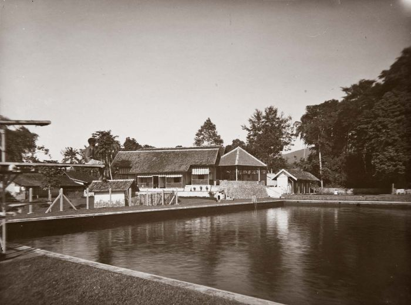
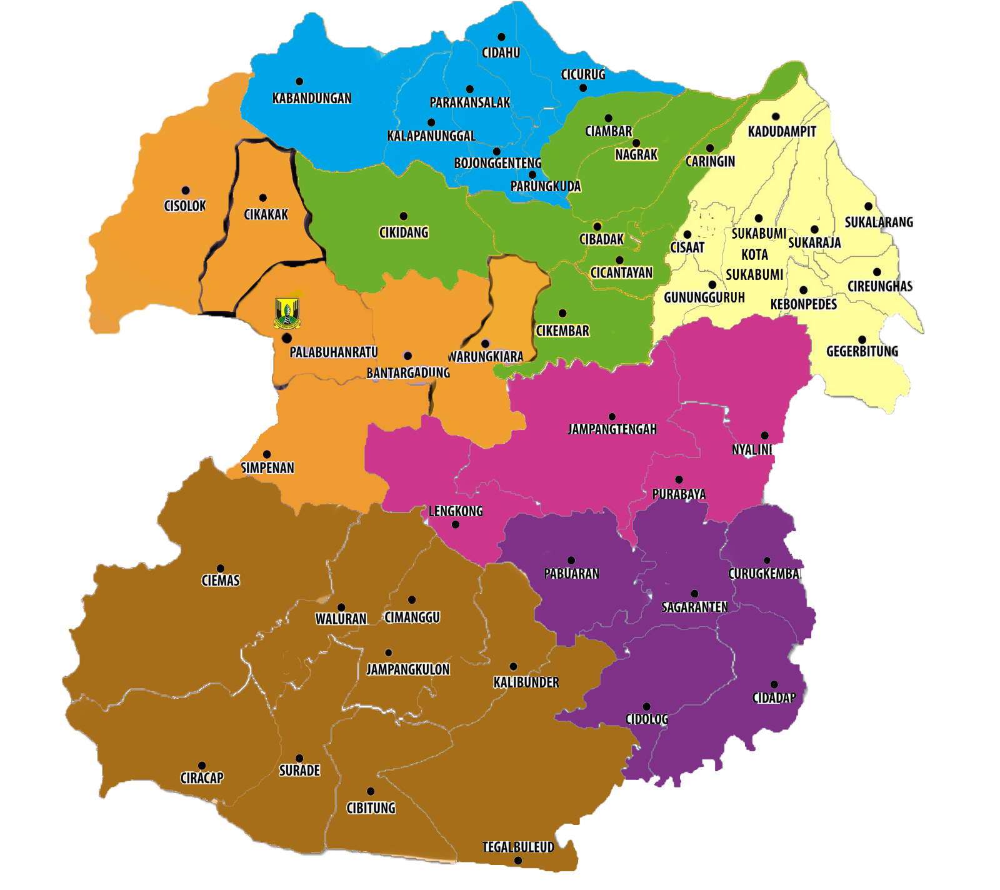
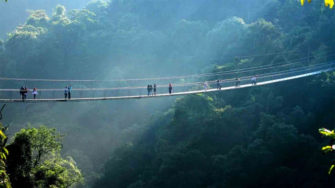
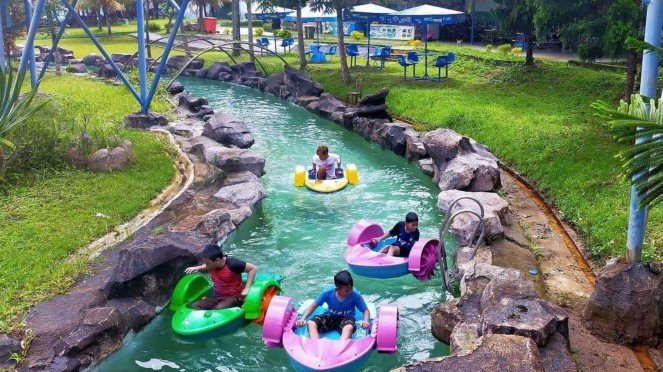
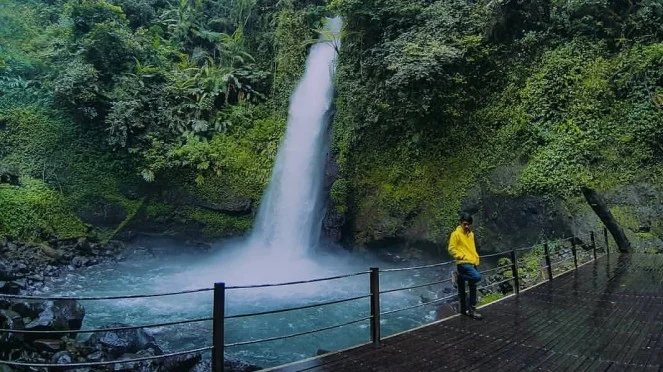

Sejarah

Pada tahun 1914 Pemerintah Hindia Belanda menjadikan Kota Sukabumi sebagai “Burgerlijk Bestuur” dengan status “Gemeente”
dennan alasan bahwa di kota ini banyak berdiam orang-orang Belanda dan Eropa pemlik perkebunan-perkebunan yang berada di
daerah Kabupaten Sukabumi bagian Selatan yang harus mendapatkan pengurusan dan pelayanan yang istimewa.
Geografis

Kota Sukabumi secara Geografis terletak di bagian selatan Jawa Barat pada koordinat 106 ˚45’50” Bujur Timur dan
106˚45’10” Bujur Timur, 6˚50’44” Lintang Selatan, di kaki Gunung Gede dan Gunung Pangrango yang ketingiannya 584 meter
di atas permukaan laut, dan berjarak 120 km dari Ibukota Negara (Jakarta) atau 96 km dari Ibukota Provinsi Jawa Barat
(Bandung). Batas-batas wilayah Kota Sukabumi meliputi:
Wisata
Kota Sukabumi merupakan kota kecil, kota sejuta cerita istilah itu sering disematkan di kota ini, kebetulan saya sendiri lahir dan dibesarkan di Kota Sukabumi. Kota Sukabumi meskipun kota kecil, kota ini memiliki berbagai tempat pariwisata yang tidak kalah dengan kota-kota besar di Indonesia. Berikut ini beberapa tempat pariwisata yang wajib di kunjungi sebagai tempat untuk rekreasi
Jembatan Gantung Situ Gunung

Tempat wisata di Sukabumi yang satu ini mungkin sudah tidak asing lagi bagi kalian. Jembatan fenomenal di Sukabumi ini
masih satu lokasi dengan Curug Sawer di kawasan konservasi Taman Nasional Gunung Gede Pangrango Resor Situ Gunung.
Panjang Jembatan Gantung Situ Gunung ini sekitar 240 meter, dan diklaim menjadi jembatan terpanjang di Asia.
Artikel ini sudah tayang di VIVA.co.id pada hari Kamis, 30 Desember 2021 - 23:16 WIB
Judul Artikel : 10 Tempat Wisata di Sukabumi Bikin Mata Tercengang dengan Pesonanya
Link Artikel : https://www.viva.co.id/gaya-hidup/travel/1436650-tempat-wisata-di-sukabumi
Oleh : Agus Setiawan
Pemandian atau Kolam Renang

Kamu ingin menikmati waktu berlibur kamu berenang? Tempat wisata ini sangat cocok menjadi pilihan. Tempat wisata di
Sukabumi ini berada di pusat kota. Taman rekreasi air ini adalah yang terbesar di Sukabumi. Tiket masuknya dipatok
sebesar Rp40.000 (weekday), Rp60.000 (weekend), dan Rp70.000 ribu (holiday season). Dengan Kapten Bart sebagai
maskotnya, Santa Sea mengajak pengunjung untuk menelusuri beragam wahana air yang ada disana seperti amazon river, asian
hot spring, racing slide, forest jungle, dan masih banyak lagi yang lainnya. Taman rekreasi ini berlokasi di Jalan Lio,
Santa, Kelurahan Gedong Panjang.
Artikel ini sudah tayang di VIVA.co.id pada hari Kamis, 30 Desember 2021 - 23:16 WIB
Judul Artikel : 10 Tempat Wisata di Sukabumi Bikin Mata Tercengang dengan Pesonanya
Link Artikel : https://www.viva.co.id/gaya-hidup/travel/1436650-tempat-wisata-di-sukabumi
Oleh : Agus Setiawan
Curug Sawer

Buat kamu yang menyukai wisata alam, Curug Sawer sangat cocok untuk destinasi kamu. Meski berada di tengah hutan,
lokasinya cukup mudah dijangkau. Wisata Curug Sawer Sukabumi sangat asri, dan masih dipenuhi pepohonan yang rindang.
Serta udara yang sangat segar dan sejuk membuat kamu betah di tempat ini. Untuk bisa melihat air terjun setinggi 30
meter tersebut, kamu perlu merogoh kocek sekitar Rp2.500. Curug Sawer dibuka mulai pukul 08.00 - 17.00 WIB. Lokasinya
terletak di Desa Gedepangrango, Kecamatan Kadudampit, Kabupaten Sukabumi, Jawa Barat.
Artikel ini sudah tayang di VIVA.co.id pada hari Kamis, 30 Desember 2021 - 23:16 WIB
Judul Artikel : 10 Tempat Wisata di Sukabumi Bikin Mata Tercengang dengan Pesonanya
Link Artikel : https://www.viva.co.id/gaya-hidup/travel/1436650-tempat-wisata-di-sukabumi
Oleh : Agus Setiawan